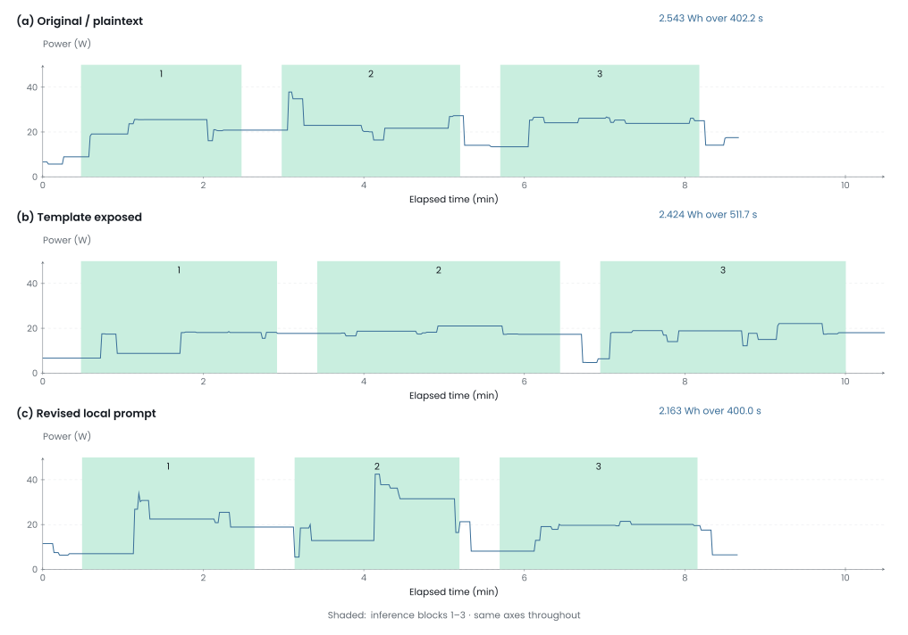

Methods and evidence
Preserved source, complete responses and measurement details behind the article.
Three local configurations
The November 12 study uses 60 distinct GSM8K test rows sampled with Python’s seed 7. Every question is forced through local inference; routing and uncertainty decisions are logged separately. Each configuration has one stochastic reply per question: temperature 0.7, maximum 512 tokens, Llama 3.2 1B on the Ryzen AI hybrid NPU+iGPU runtime.
The original run uses SEVEN snapshot 713203c and the cached runtime’s plaintext fallback. The second exposes the backend’s bundled Jinja chat template with unchanged application source. The third uses an archived revised adapter and prompt. These runs differ in formatting, prompt length and generated output; they do not isolate a causal improvement.
The grader extracts the last number and compares it with the dataset’s final numeric answer. It does not judge reasoning, units or completeness. The uncertainty function is recomputed from each archived source snapshot. Question text, reference answers and grades are checked against the retained dataset.
All 60 questions and 180 responses
Changing the question keeps the three configurations aligned. These are complete recorded replies, including mistakes and truncation.
Reference final answer:
Paired routing audit
The original and restored classifier functions were each executed on all 15,011 Dolly instructions with their optional context. The audit records initial decisions only; it does not call inference providers. Source hashes and every row’s paired result are retained. Dolly has no ground-truth destination labels, so this audit measures changed decisions, not routing accuracy.
Complete battery traces
Battery telemetry was sampled at roughly one-second intervals while disconnected from AC power. Three 20-question inference blocks were separated by loaded-idle intervals. Energy is the trapezoidal integral of battery-reported discharge power within each logged block, with interpolated boundary samples. Loaded-idle consumption is not subtracted.

The main article’s interval is the first block of the original run: 0.728675 Wh over 119.993 s. Its figure retains every battery sample in the displayed window without smoothing.
Application recording
The November 14 walkthrough shows the restored application with real local, live-data and cloud providers, using an isolated demonstration history. Windows Graphics Capture preserved the entire maximized 1920 × 1140 terminal window. H.264 encoding retains the original wall time at 15 frames per second; no cropping, resizing, cuts or speed changes were applied.
The original PROJECT SEVEN sign remains in the application. The restoration includes the local runtime launcher and explicit chat template, word-boundary routing, source-labelled tools, cloud configuration and terminal fixes. Later changes do not retroactively alter the November 12 experiments. The source archive excludes credentials, model weights and personal chat history.
Figure production
Python validates the records and exports the data. Authored TikZ and PGFPlots compose the mechanism, verbatim response and power interval, using the same Poppins face and colour definitions as the article. Tectonic builds the vector PDFs; SVG exports preserve the glyphs as paths. Mobile layouts use the same observations with a different arrangement.
AI assistance supported analysis and typesetting code. No generative image tool created or altered observations. The approach follows HKUST’s scientific-figure guidance. The 30-page reference audit records the design investigation.
Configured local and cloud estimates
The system plate uses a three-panel composition: system dispatch, an expansion of the local path, and the retained reply/accounting record. The 16 decoder layers and hidden width 2,048 belong to the pretrained Llama model, rather than a SEVEN-designed network. They are checked against the pinned AMD model configuration and the local runtime cache. Token cells are symbolic sequence positions, not invented token IDs or measured attention values. The full-size vector view preserves the composition on small screens.
The main comparison reproduces the first local reply in the walkthrough, “The capital of France is Paris.” The saved metadata contains 0.0146388889 Wh and a 0.0387500000 Wh difference against the cloud profile. Dividing the local Wh by the archived 0.85 J/token coefficient recovers an integer estimator input of 62 tokens. Executing the archived estimator at that input reproduces both saved values. This is a reconstruction of the estimator input, not a fresh token measurement or a second cloud execution.
The local coefficient is 0.85 J/token, bounded by 0.40–1.30. The default cloud proxy is 3.10 J/token, bounded by 2.50–3.50. At 62 tokens the outputs are 14.6389 mWh (6.8889–22.3889) and 53.3889 mWh (43.0556–60.2778). These bounds are configuration assumptions; they are not confidence intervals. The coefficients have not been calibrated to the demonstrated hybrid NPU+iGPU runtime or its GPT-4o-mini cloud adapter.
The cloud profile also stores 0.43 Wh per query and names Jegham et al., How Hungry is AI? That paper reports a modelled short GPT-4o query, rather than a measurement of this demonstration. SEVEN’s implementation gives its per-token coefficient precedence over the stored per-query value. The paper’s headline value therefore does not validate the linearly scaled 3.10 J/token proxy. Missing or nonpositive usage defaults to 500 tokens. A completed local attempt followed by a completed cloud escalation adds both configured estimates; a direct tool result has no inference estimate assigned.
The architecture was checked against the same captured router, heuristics, tools and persistence source. Its arrows describe execution and returned replies. The energy panel explains accounting; battery telemetry belongs to the separate measurement experiment. All three recorded local cases and estimator checks preserve the arithmetic and source hashes.
Sources and downloads
- System architecture PDF / TikZ
- Energy comparison PDF / TikZ
- Estimator inputs and reproduced values
- Architecture and comparison source
- Source revisions and provenance
- Restored application and setup
- All paired responses
- Computed study summary
- All paired routing decisions
- Routing counts and source hashes
- Original battery samples
- Template battery samples
- Revised-prompt battery samples
- Recording method and chapter times
- Application execution record
- Full recording
- Figure sources and checksums
- Figure build script
- Study validation and analysis
- Routing plate PDF / TikZ
- Recorded answer PDF / TikZ
- Power interval PDF / PGFPlots
Run the application and rebuild the figures
# Restored SEVEN checkout
.\Start-SEVEN.ps1 -Doctor -Json
.\Start-SEVEN.ps1 -Ask "What is the capital of France?" -NoEscalate -Json
.\Start-SEVEN.ps1
# Article checkout; Python dependencies and Tectonic required
python evidence/analyse_study.py
python evidence/build_publication_figures.py
python evidence/verify_article.py
python evidence/serve_preview.pyUse --tectonic PATH when the compiler is outside PATH. The preview server supports native video seeking. Figure builds use archived observations and do not contact a provider. Live weather, prices and news naturally change. Python dependencies.
References
- Team SEVEN. Application repository. Original snapshot 713203c; team roles follow its README.
- Darren Burns. Elia terminal interface. MIT licence retained in the application package.
- Databricks. Dolly-15k, CC BY-SA 3.0. Derived decision records retain its licence.
- Cobbe et al. GSM8K, MIT licence. Last-number matching here is narrower than a full benchmark evaluation.
- Shikun Liu. Clarity, Prismer and related project pages. The article uses its own data and application footage.